11 plates. Deterministic overlays rendered by the composition-analysis skill.
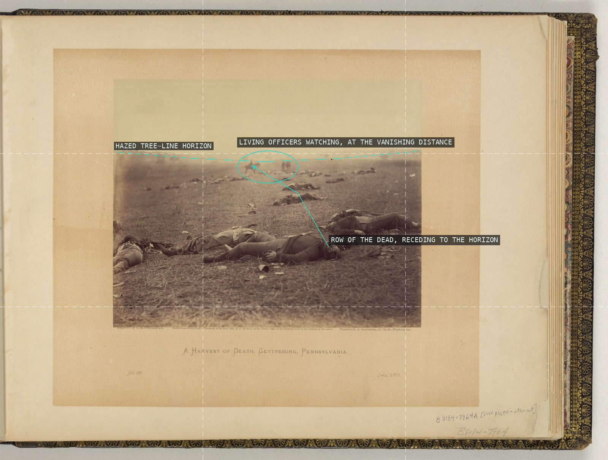
01-harvest-of-death The fallen are laid out as a receding diagonal row across a stripped field, flattened beneath a low hazy horizon, while mounted officers stand unhurt at the vanishing point of that row.
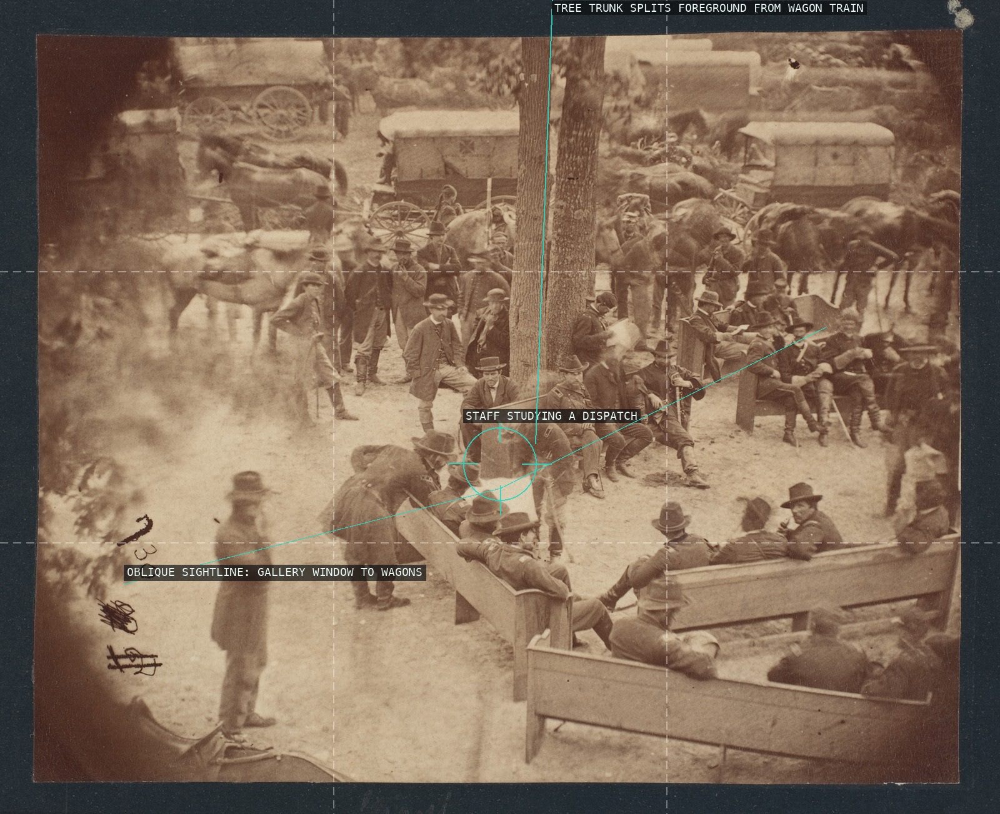
02-council-of-war The upper-gallery vantage rakes across pews, staff, and tree to collapse near and far into one oblique diagonal field, not a level tableau.
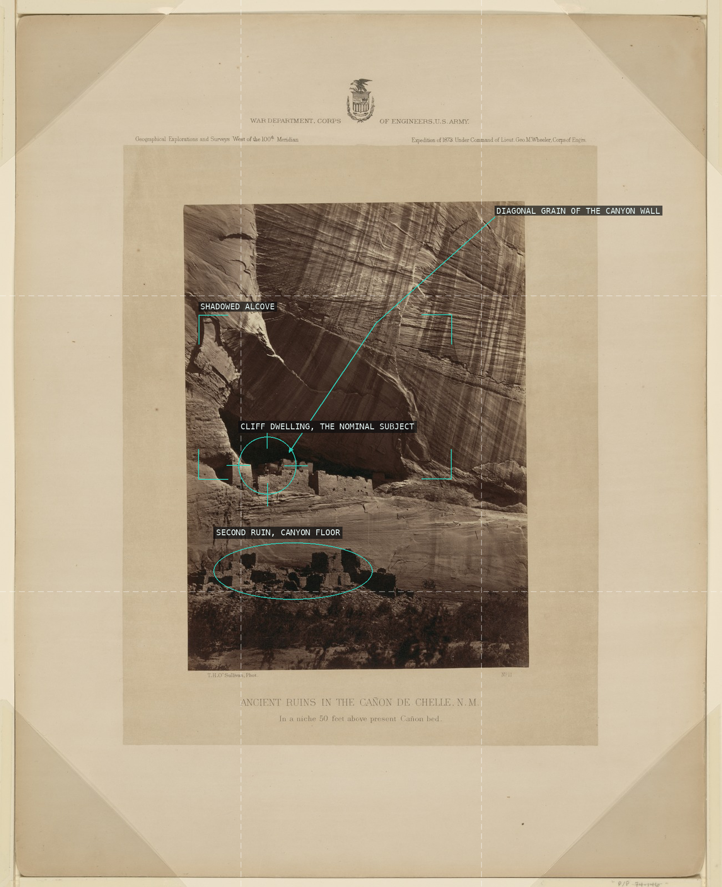
03-ancient-ruins-chelle The towering diagonally-streaked sandstone dwarfs the cliff dwelling into a thin masonry seam tucked in its shadowed niche, with a second ruin below repeating the theme: geology overwhelms architecture in scale.
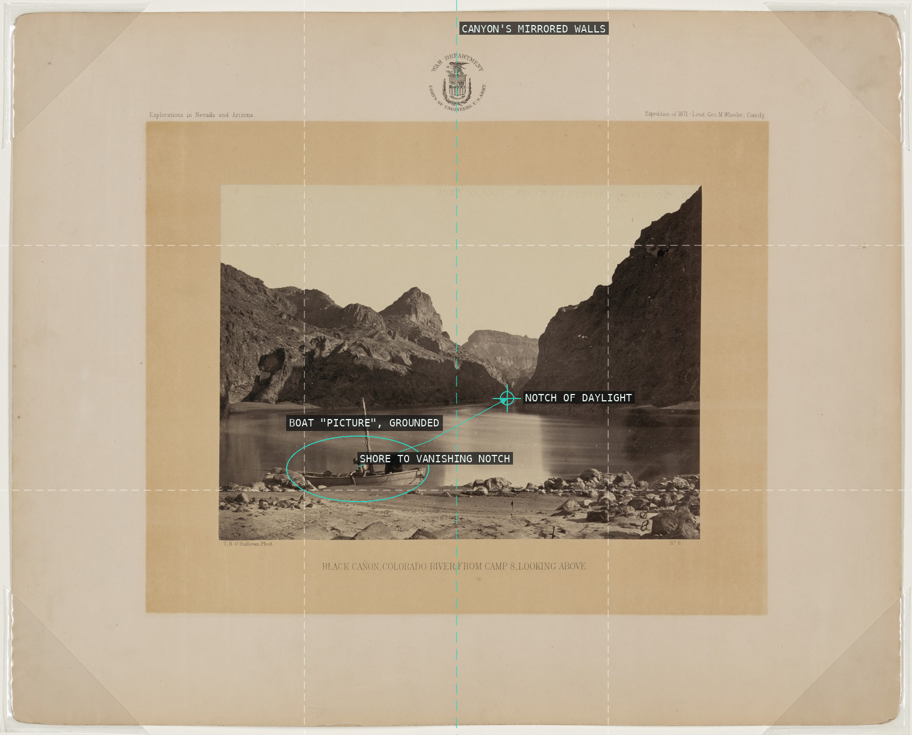
04-black-canon The grounded boat is the only scale marker against the Black Canon's mirror-symmetric walls, which converge along the frame's center toward a small notch of daylight.
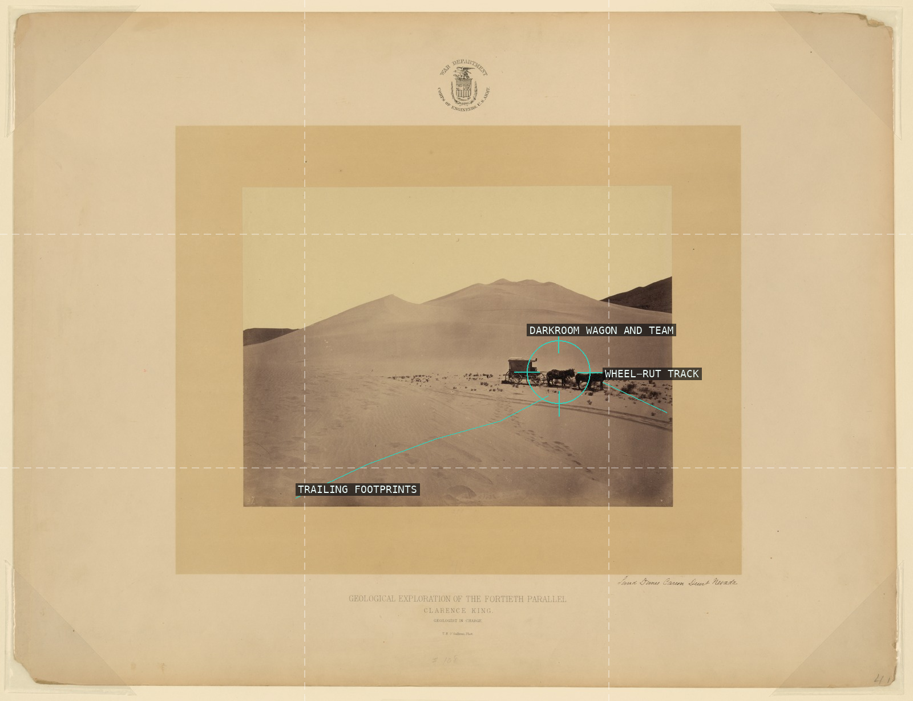
05-sand-dunes A wagon and its own tracks are the only measure of scale O'Sullivan gives an otherwise featureless dune field.
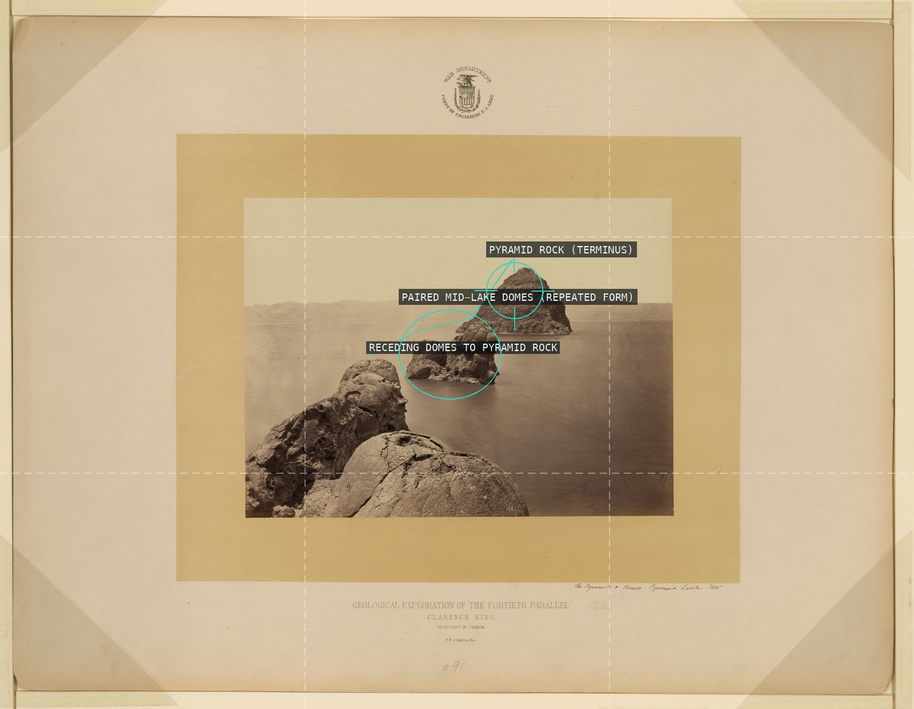
06-tufa-domes A near-identical row of tufa domes recedes across the still water toward the massive terminal Pyramid Rock, diminishing scale standing in as a measure of geologic time.
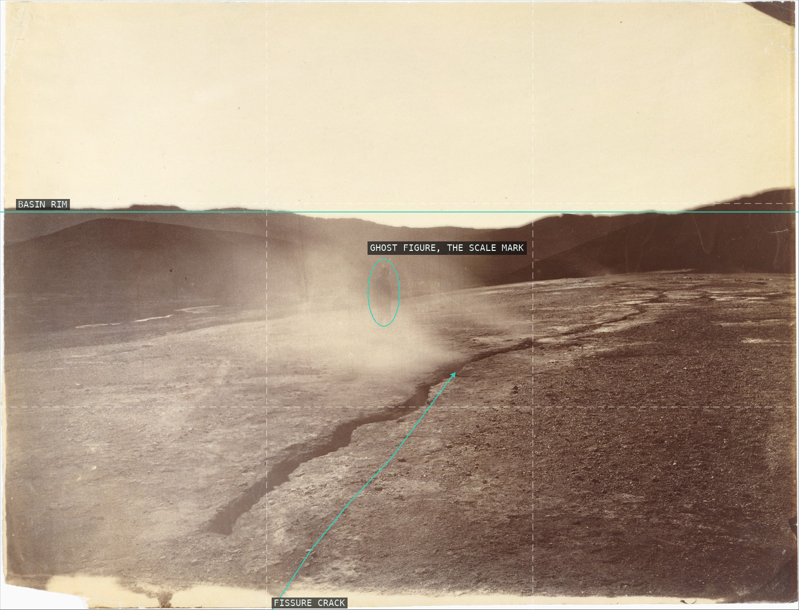
07-fissure-vent A ground fissure leads the eye straight into its own vent, where a survey member's silhouette dissolves into the same steam meant to give the flat basin scale.
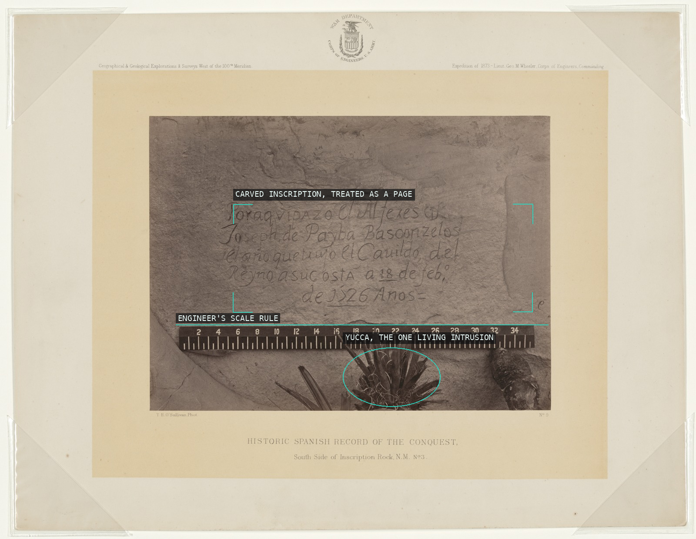
08-inscription-rock O'Sullivan shoots the rock face dead-on like a page to be copied, framing the inscription for legibility and letting only the scale rule and a stray yucca admit a camera, not a scribe, made this copy.
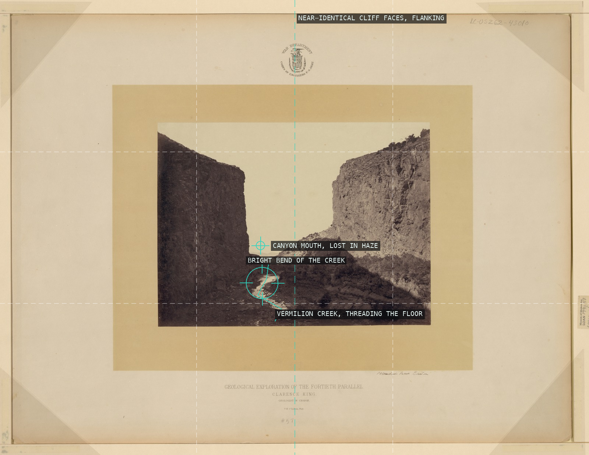
09-vermilion-creek Two near-mirrored canyon walls funnel the eye down Vermilion Creek to a vanishing point swallowed in distant haze.
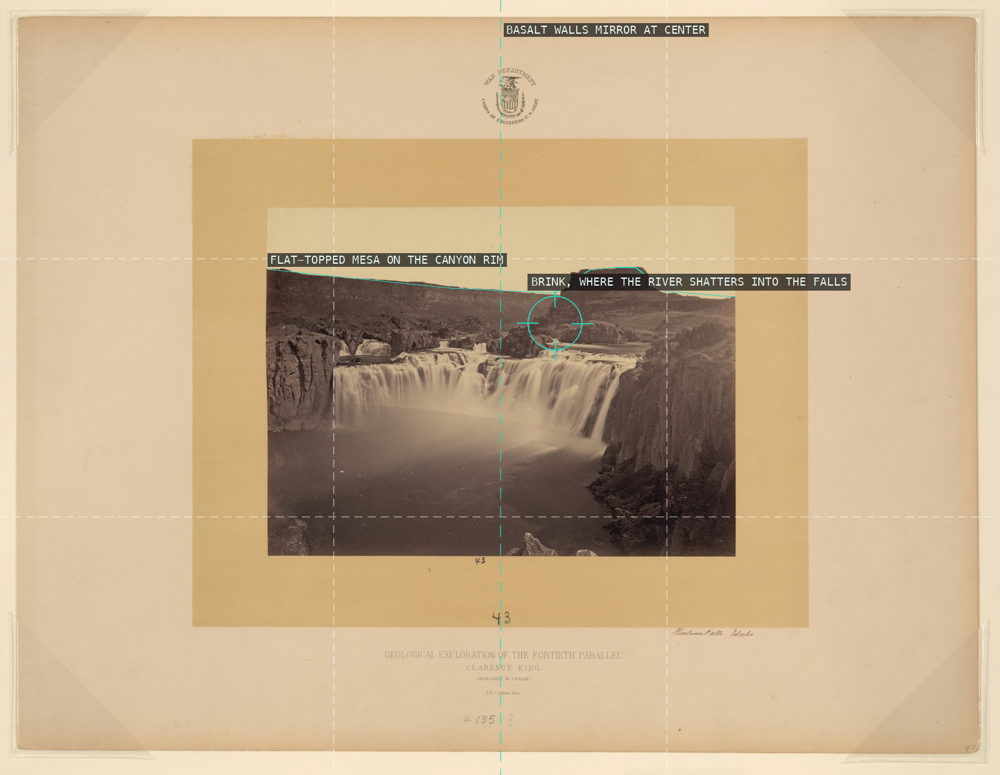
10-shoshone-falls A flat-topped mesa rides the skyline directly above the brink where the river shatters into an edge-to-edge curtain, the whole scene held in near-mirror symmetry between two black basalt walls.
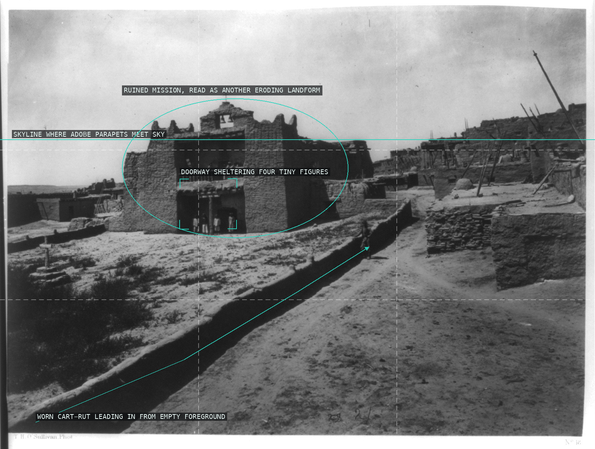
11-zuni-mission The ruined adobe mission sits slightly left of center against the pueblo's stacked terraces, its weathered silhouette read as another eroding landform, while a worn wagon-rut ditch draws the eye in from an all-but-empty foreground.